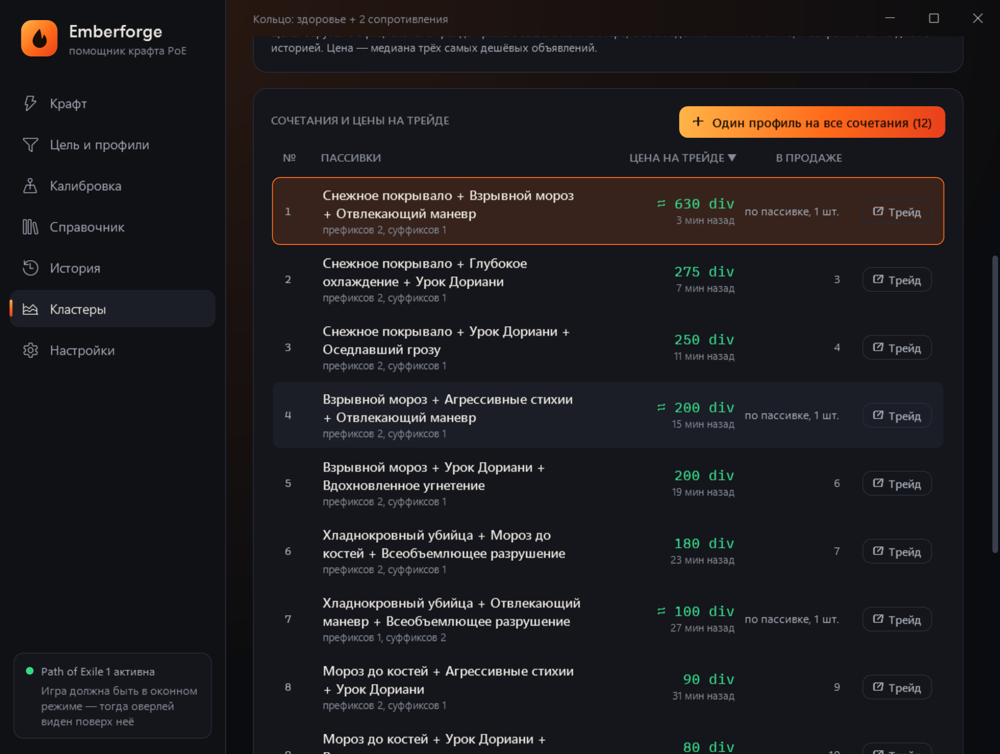

Emberforge
EmberforgeАвтокрафт и помощник крафта для Path of Exile 1 и 2
Задайте нужные моды — Emberforge сам решит, какую сферу применить, и остановится на попадании. Бесплатно, на русском и английском, для русского и английского клиента игры.
Скачать бесплатноWindows 10/11 · обновляется сама · или один файл без установки

Как это работает
Опишите цель
Начните вводить мод по-русски или по-английски — программа подскажет его точно так, как он написан в игре. Отметьте обязательные моды и сколько нужно из остальных.
Запишите позиции
Один раз наведите курсор на стопки сфер и на предмет и нажмите клавишу записи. Позиции сфер общие для всех профилей.
Нажимайте шаг
Каждое нажатие — одна сфера. Программа читает предмет через Ctrl+C, проверяет моды и сама выбирает следующую сферу.
Заберите вещь
Как только цель собрана, загорается «ПОПАДАНИЕ!» и программа больше не тронет удачный предмет, сколько ни нажимайте.
Что умеет
Цепочки крафта
Сфера превращения → сфера перемен ⇄ сфера усиления → сфера царей → сфера возвышения ⇄ сфера отмены. Реакции на ненужный мод и лимиты на каждую сферу.
Цикл «возвышение ⇄ отмена»
Одной кнопкой: ненужный мод после возвышения снимается отменой, отмена сняла ненужный — снова возвышение, сняла мод волшебной вещи — очищение и заново.
Крафт кластеров
Цены всех сочетаний пассивок кластерного самоцвета с официального трейда и один профиль на все выгодные сочетания. Бесплатно и прямо в программе.
Роллинг карт T17
Количество предметов, больше валюты, размер групп и запрещённые моды — для карт и путевых камней, пачкой по сетке инвентаря.
6 гнёзд и 6-линк
Сфера златокузнеца до нужного числа гнёзд, потом сфера соединения до 6 связей. Можно только гнёзда или только связи.
Уникальные предметы
Спам сферой удачи по одной базе до нужного уникального и спам древней сферой до уникального с нужным названием. База из 1 200+ уникальных.
Подсказки при вводе
8 600+ модов PoE1 и 3 500+ модов PoE2, 2 600+ баз и 1 200+ уникальных — с русскими и английскими названиями, как в игре.
Шансы и стоимость
Цены валюты с poe.ninja, стоимость сессии и одного попадания, оценка шанса по весам модов и ссылка на трейд для готовой вещи.
Любые клавиши
Шаг, авто, запись и стоп — на любую клавишу, сочетание с Ctrl/Alt/Shift или боковую кнопку мыши.
Оверлей поверх игры
Статус, попытки и подсказки по клавишам. Ставится в угол окна игры или в любое место экрана и не забирает фокус.
PoE 2
Подсказки предзнаменований левши и правши, сущности вместо сферы царей, база модов PoE 2 с русскими названиями.
Защита от ошибок
Блокировка на попадании, проверка предмета перед каждым действием, защита от лага сервера и экстренный стоп одной клавишей.
Безопасность и правила игры
- В безопасном режиме (по умолчанию) одно ваше нажатие — одно действие в игре. Ровно этого требует Grinding Gear Games: «одно нажатие — одно действие на сервере».
- Emberforge не читает память игры, не внедряется в процесс и не меняет её файлы. Он видит предмет так же, как вы, — через копирование текста (Ctrl+C).
- Авто-режим, где программа кликает сама, нарушает правила игры. Он выключен и включается только после явного согласия с риском. «Имитации человека» для обхода защиты игры в Emberforge нет и не будет.
Что крафтить на кластерном самоцвете

Выберите самоцвет, зачарование, число пассивок и лигу — программа соберёт цены всех полных сочетаний пассивок с официального трейда, прямо с вашего компьютера и с соблюдением лимитов сайта, и сохранит их с историей проверок. Отсортируйте по цене, отфильтруйте дорогие и сделайте один профиль на все сочетания: цепочка крафта остановится на любом из них.
Быстрый старт
- Скачайте установщик и запустите. Новые версии ставятся кнопкой «Обновить» внутри программы.
- Переключите Path of Exile в режим «Оконный» или «Оконный без рамки».
- На странице «Цель и профили» выберите готовый профиль или начните вводить нужные моды.
- В «Калибровке» запишите позиции сфер и предмета клавишей F4.
- В игре нажимайте F2, пока не загорится «ПОПАДАНИЕ!». Экстренная остановка — F10. Клавиши можно поменять.
Частые вопросы
Emberforge бесплатный?
Да. Скачать и пользоваться можно бесплатно, без регистрации и подписки.
Это бот? За автокрафт банят?
В безопасном режиме (по умолчанию) программа ничего не нажимает сама: одно ваше нажатие — одно действие в игре. Авто-режим нарушает правила игры и может привести к бану, поэтому он выключен и включается только после явного согласия с риском.
Работает с русским клиентом игры?
Да. Тексты модов, баз и уникальных предметов есть для русского и английского клиентов, а язык клиента программа определяет сама по журналу игры.
Поддерживается Path of Exile 2?
Да: путевые камни, цепочки крафта, сущности, подсказки предзнаменований и база модов PoE 2 с русскими названиями.
Как скрафтить кластерный самоцвет с нужными пассивками?
На странице «Кластеры» выберите самоцвет и зачарование — программа соберёт цены сочетаний с трейда и сделает один профиль на все выгодные. Цепочка крафта (перемены → царей → возвышение ⇄ отмена) остановится на любом из них.
Как сделать 6-линк?
Стратегия «Гнёзда и связи»: сфера златокузнеца до 6 гнёзд, потом сфера соединения до 6 связей. Можно выбрать только гнёзда или только связи.
Можно поставить шаг на боковую кнопку мыши?
Да. В «Настройках» нажмите на поле действия и затем любую клавишу, сочетание с Ctrl/Alt/Shift или кнопку мыши. В других программах кнопка работает как обычно.
Windows пишет «Windows защитил ваш компьютер».
У программы нет платной цифровой подписи. Нажмите «Подробнее» → «Выполнить в любом случае». Контрольная сумма exe лежит рядом в файле .sha256.
Где хранятся профили и настройки?
В папке %AppData%\Emberforge. Обновление программы их не трогает.